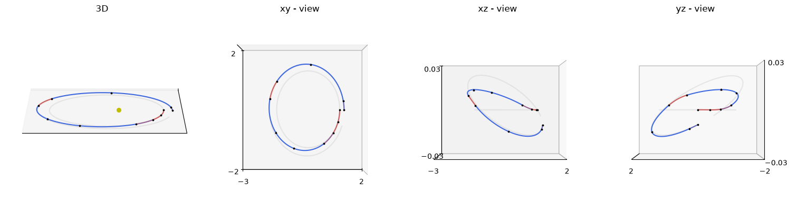
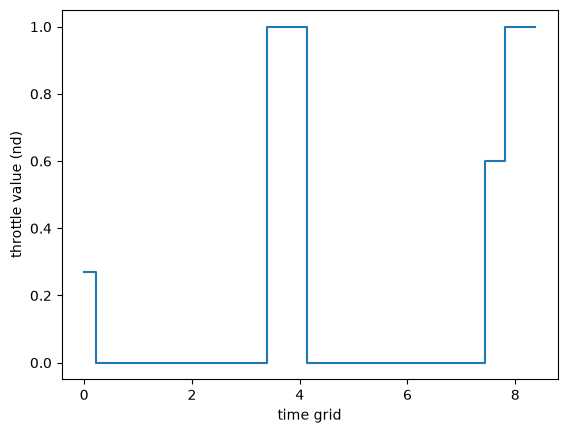

Zero-Order Hold: Multiple Shooting#
Solve the Cartesian two-body TOPS P0 benchmark with multiple shooting, following the first example in Zero-Order Hold I. The interior states are initialized by propagating from the fixed endpoints.
import pykep as pk
import numpy as np
import pygmo as pg
from matplotlib import pyplot as plt
ipopt = pg.ipopt()
ipopt.set_integer_options({"max_iter": 2000})
ipopt.set_numeric_options({"tol": 1e-10})
ipopt.set_string_options({"sb": "yes"})
algo = pg.algorithm(ipopt)
prob_name = "P0"
udp = pk.trajopt.gym.tops_twobody(prob_name, nseg=10, time_encoding="softmax", ms=True)
print(udp.extra_info)
prob = pg.problem(udp)
prob.c_tol = 1e-7
print("Variables:", prob.get_nx(), "Equalities:", prob.get_nec(), "Inequalities:", prob.get_nic())
Mildly-elliptic to mildly-elliptic transfer (e_s~0.201, e_f~0.210) in fixed tof -> T=0.22N, Isp=3000s
Variables: 115 Equalities: 70 Inequalities: 10
Initialize the internal states of each population member from its controls and time grid. A propagated state outside the node bounds raises ValueError. A finite defect or a feasible fitness alone does not establish that every segment propagation succeeded.
pop = pg.population(prob, 1)
for i, x in enumerate(pop.get_x()):
pop.set_x(i, udp.guess_internal_states(x))
Compare the analytical gradient with finite differences. prob.gradient_sparsity() supplies the coordinates for either a sparse or dense gradient.
x = pop.champion_x
pattern = prob.gradient_sparsity()
jacobian = np.zeros((prob.get_nf(), prob.get_nx()))
jacobian[pattern[:, 0], pattern[:, 1]] = prob.gradient(x)
numerical = pg.estimate_gradient_h(prob.fitness, x, dx=1e-8).reshape(jacobian.shape)
grad_err = numerical - jacobian
grad_err.min(), grad_err.max()
(-1.0748347064465369e-07, 1.134445504272219e-07)
pop = algo.evolve(pop)
print("Feasible:", prob.feasibility_f(pop.champion_f))
print("Objective:", pop.champion_f[0])
print("Final mass:", pop.champion_x[0] * udp.MASS)
print("Final tof:", pop.champion_x[4 * udp.nseg + 1] * udp.TIME)
Feasible: False
Objective: -0.81394925764
Final mass: 0.81394925764
Final tof: 11.0
axes = udp.plot(pop.champion_x, N=100, mark_segments=True, s=3, c="k")

udp.plot_throttle(pop.champion_x)
<Axes: xlabel='time grid', ylabel='throttle value (nd)'>
